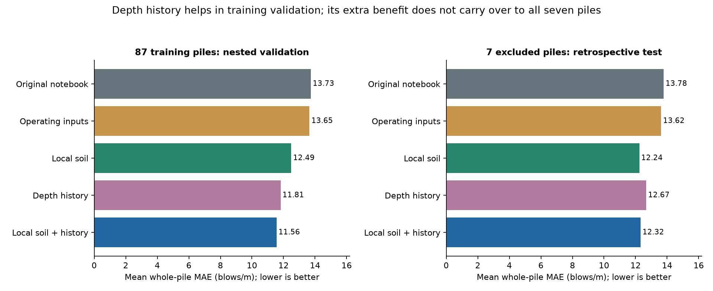
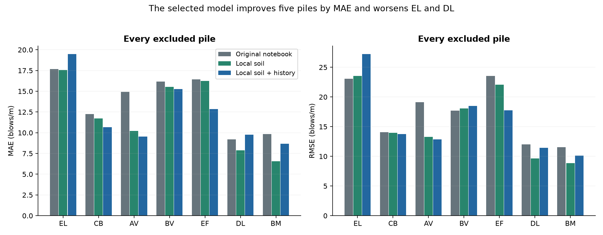
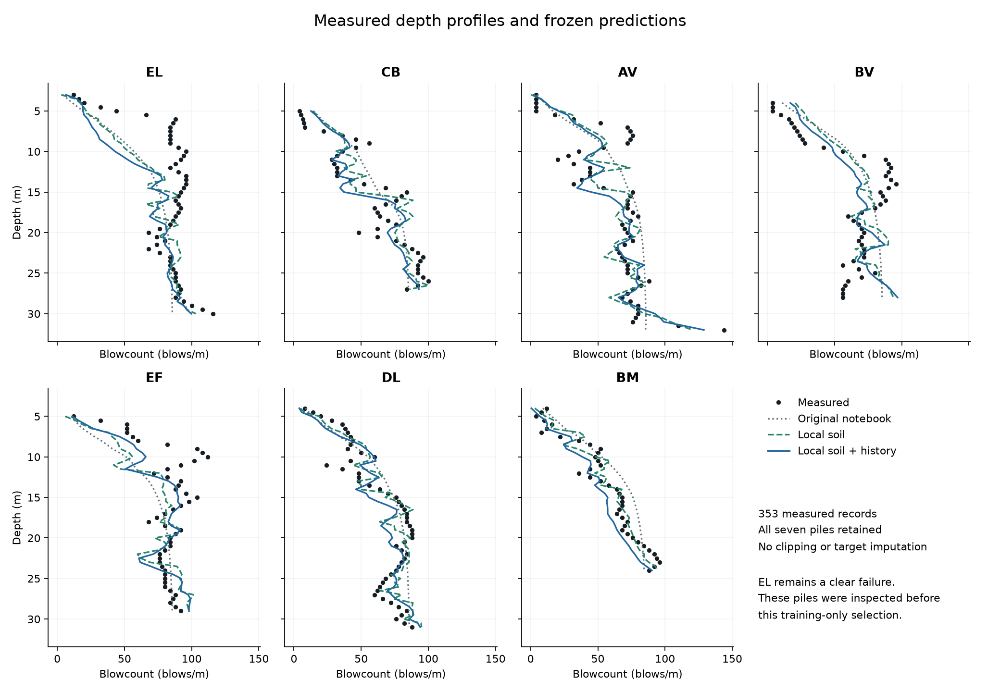

Better overall, with an unresolved failure
Pooled MAE 13.91 → 12.42 blows/m. RMSE 18.10 → 17.05. The selected model combines local soil and depth history, but local soil alone slightly outperforms it on the seven-pile aggregate.
These seven piles were inspected in earlier work. This is a retrospective test; all selection and fitting in this iteration used only the other 87.
Completed numerical findings
The training-only winner combines local qc, fs and u2 with shallower-layer summaries, operating inputs and an additive piecewise-linear ridge fit. Its 5-fold selection MAE was 11.597 blows/m per pile. The second fixed split seed selected the same candidate.
The nested procedure reduced mean pile MAE from 13.73 to 11.56. All five outer folds chose the combined family; three chose alpha 0.001 and two chose 0.01. This estimates the fixed selection procedure, with each validation pile excluded from the inner selection and fitting.
On all seven excluded piles (353 measurements), pooled MAE fell from 13.91 to 12.42 (10.7% lower), and pooled RMSE from 18.10 to 17.05. Equal-pile MAE fell from 13.78 to 12.32.
Adding history did not beat the local-soil-only family on these seven piles: pooled MAE 12.42 versus 12.33, and RMSE 17.05 versus 16.65. The chosen model remains the training-only winner; test scores did not switch the choice.
By MAE the selected model improves five piles and worsens EL and DL. By RMSE it improves five and worsens EL and BV. EF improves to R² 0.024, only just above its within-pile mean benchmark. EL worsens to R² -0.815; its systematic underprediction is unresolved.
The selected model underpredicts overall by 4.56 blows/m. It has zero negative predictions on the seven piles, but the nested training-validation procedure produces 19 negatives, which were retained. No physical nonnegativity constraint was imposed.
Descriptive paired whole-pile 95% bootstrap intervals cross zero: selected minus original mean-pile MAE [-3.15, 0.12], and combined minus local-only [-1.43, 1.35] blows/m. Seven selected, potentially spatially dependent piles cannot establish a population-wide advantage.
Selection and evaluation kept separate
Primary selection: five folds of whole piles, 33 fixed candidates, mean pile MAE. Nested assessment: five outer folds with four inner folds. The final sensitivity seed did not change the winner. A frozen model file preceded seven-pile evaluation; no test-based replacement was made.
| Family | Training-only winner | Selection MAE | Nested MAE | Seven-pile MAE |
|---|---|---|---|---|
| Original notebook | original | 13.731 | 13.731 | 13.781 |
| Operating inputs | operating_hinge_a0.001 | 13.647 | 13.647 | 13.624 |
| Local soil | local_hinge_a0.001 | 12.487 | 12.488 | 12.238 |
| Depth history | history_hinge_a0.001 | 11.783 | 11.815 | 12.675 |
| Local soil + history | local_history_hinge_a0.001 | 11.597 | 11.560 | 12.319 |
Table MAE is the mean of pile MAEs, so each pile receives equal weight. Selection scores are used to choose the candidate; nested scores evaluate the selection procedure. Pooled headline scores weight each depth record equally.

Every excluded pile
All 353 observed target values scored. Bias means prediction minus measurement.
| Pile | n | Original MAE | Selected MAE | Original RMSE | Selected RMSE | Selected bias | Selected R² |
|---|---|---|---|---|---|---|---|
| EL | 55 | 17.69 | 19.49 | 23.09 | 27.24 | -17.28 | -0.815 |
| CB | 45 | 12.23 | 10.66 | 14.09 | 13.74 | -0.84 | 0.772 |
| AV | 59 | 14.91 | 9.53 | 19.12 | 12.84 | -0.92 | 0.769 |
| BV | 49 | 16.17 | 15.25 | 17.68 | 18.50 | +2.14 | 0.521 |
| EF | 49 | 16.44 | 12.84 | 23.53 | 17.74 | -7.00 | 0.024 |
| DL | 55 | 9.20 | 9.78 | 12.03 | 11.45 | -0.93 | 0.714 |
| BM | 41 | 9.82 | 8.69 | 11.55 | 10.11 | -6.79 | 0.854 |


What history means here
The model sees current qc, fs and u2, operating inputs, and summaries of shallower soil layers. Histories use prefix means and exponential lengths of 1 m and 5 m. Scalers, hinge knots and coefficients are fitted within each fitting fold. No deeper measurements or previous blowcount targets enter a prediction.
This is depth history, not time history. No pause durations or recovery observations are supplied. Predictive gains cannot identify physical remoulding, damping or recovery. The original notebook already contains accumulated qc; its baseline is not a no-history control.
The selected fit has 16 raw predictors and 64 additive basis columns, with ridge alpha 0.001. It is an empirical regression, with no imposed nonnegativity or constitutive law. Negative cross-validated outputs remain reported.
What still needs testing
EL remains poorly predicted, and these seven piles do not confirm an extra history benefit over current soil alone. New piles from a separate site, with observed targets and matching operating measurements, are needed for an independent check. Random whole-pile splits do not remove possible spatial dependence. Source energy normalization and original resampling remain inherited limitations.
Physical soil measurements do not test human meaning, penalties or social memory. The community model may retain those questions, but requires its own observations.
Reproduce and inspect
19 scientific unit tests and 76 saved-result/rerun checks passed. An independent numerical rerun reproduced the saved results and fitted models.
python -m pip install -r requirements.txt python -m unittest -v test_model python run_analysis.py select --data /path/to/training_data.csv --out /path/to/new_run python run_analysis.py evaluate --data /path/to/training_data.csv --out /path/to/new_run --private-out /path/to/private_predictions python audit_results.py --out /path/to/new_run python make_report.py --out /path/to/new_run --private-out /path/to/private_predictions
Full report and sources · Frozen protocol · All candidate scores · All seven-pile scores · Frozen models · Uncertainty · Checks
Data: ISFOG2020 Kaggle competition. Methods: grouped validation and nested selection. Raw data stays local.